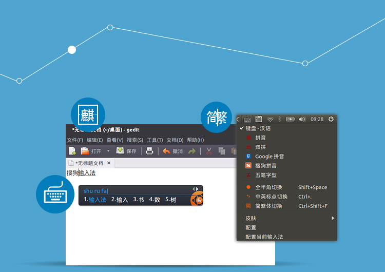

<div class="main wide">

<div class="text" style="position:absolute; top:90px; left:140px">

<div><h1>Sogou Input Method</h1></div>

<div>
<p>Sogou Input Method for Linux is co-developed by Ubuntu Kylin team and Sogou Corp.. It is based on Fcitx framework and supports the same user experience with Windows, Mac version. You are welcome to install it via Ubuntu Kylin Software Center or www.ubuntukylin.com.</p>
</div>

</div>



</div>
